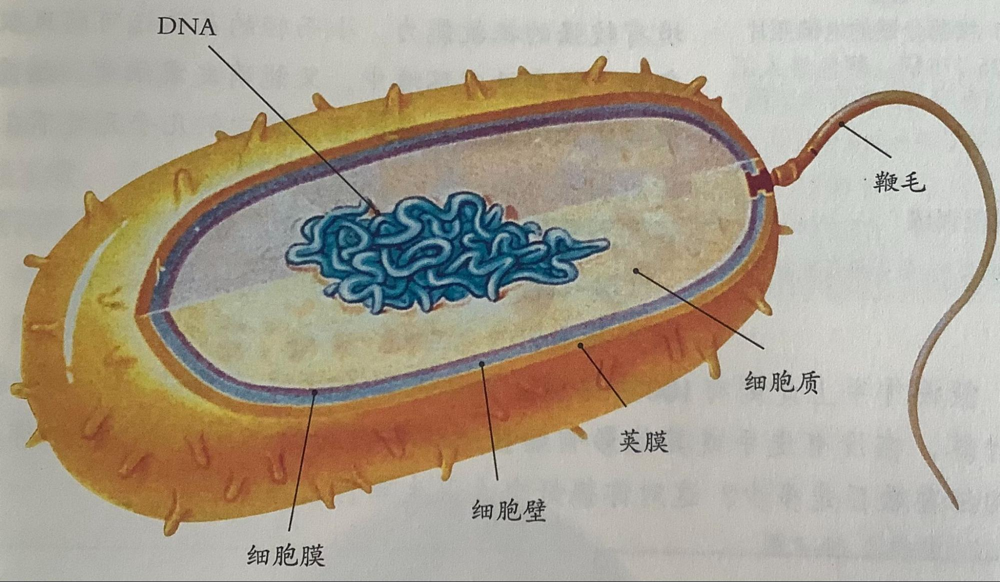

细菌不是自然发生过，而是由原来已经存在的细菌产生的
形态结构:十分微小，都是单细胞的，每个细菌都是独立生活的，有DNA集中区，但无细胞核（原核生物）(原核生物≠原生生物)
补：细菌具有细胞壁、细胞膜、细胞质等结构
| 细胞壁 | 保护和支持 |
| 细胞膜 | 保护，控制物质进出 |
| 细胞质 | 新陈代谢的主要场所，呼吸作用 |
（未形成的细胞核）（DNA集中区域）又称拟核、核区* |
有DNA集中区域，起遗传作用 |
鞭毛（特殊结构） |
有助于细菌在液体中有游动（运动） |
荚膜（细胞壁外）（特殊结构） |
具有保护作用，通常与细菌的致病性有关 |
细菌的分类---通过形态结构分为：球菌，杆菌，螺旋菌
性质
细菌属于分解者（把有机物分解为简单的无机物）
大多数细菌只能利用现成的有机物生活，无叶绿体、线粒体
细菌的生殖
细菌是靠分裂进行生殖的（分裂生殖）
细菌的芽孢 （特殊结构，不是所有细菌都有）
部分细菌的呼吸
乳酸菌（乳酸杆菌）的呼吸
无氧呼吸：葡萄糖→乳酸+少量能量
醋酸菌（醋酸杆菌）的呼吸
有氧呼吸：葡萄糖→醋酸+能量
如果这两句表达式无法一字不差的背下来，可以只记住乳酸菌采用无氧呼吸
答题规范：当题目问细菌的结构时---“未形成的细胞核”、“DNA集中区”可直接填“DNA”
跳转到下个文档--真菌